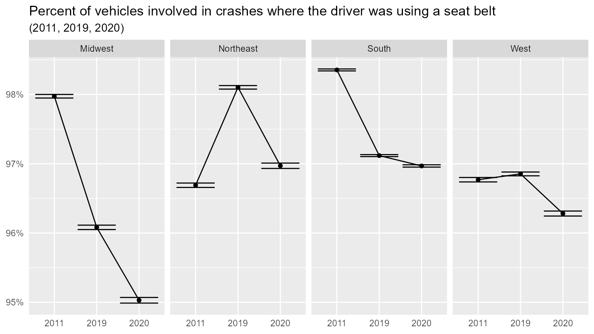
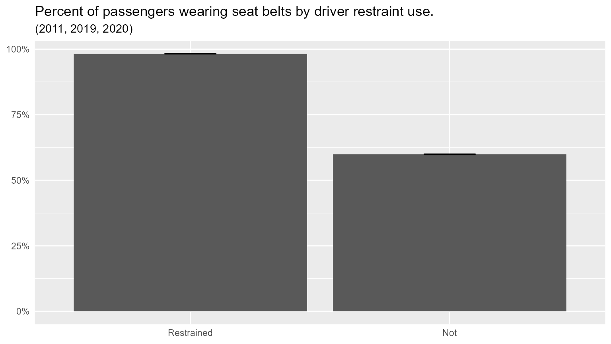

Driver and Passenger Seatbelt Use
Source:vignettes/Driver_passenger_SB_use.Rmd
Driver_passenger_SB_use.RmdDo vehicle passengers take cues from the driver regarding seat belt (SB) use? Here we investigate the effect of driver SB use on passenger SB use while accounting for other relevant factors.
First we download three years of GESCRSS data. We use GESCRSS because it includes more than just fatal crashes. The three years (2011, 2019, 2020) were chosen to compare 2011 to 2019 (as SB has generally increased over time), and 2019 to 2020 (to explore the effects of COVID).
Note that SB use may be biased because it is sometimes self-reported. Using only data from fatalities may improve the reliability of the seat belt use data element.
mydata <- rfars::get_gescrss(years = c(2011, 2019, 2020), proceed = T)
#>
#> ── Column specification ────────────────────────────────────────────────────────
#> cols(
#> .default = col_character(),
#> year = col_double(),
#> psu = col_double(),
#> psustrat = col_double(),
#> casenum = col_double(),
#> weight = col_double(),
#> id = col_double(),
#> veh_no = col_double(),
#> per_no = col_double(),
#> minute = col_double(),
#> mod_year = col_logical(),
#> model = col_double(),
#> peds = col_double(),
#> permvit = col_double(),
#> pernotmvit = col_double(),
#> pvh_invl = col_double(),
#> str_veh = col_double(),
#> ve_forms = col_double(),
#> ve_total = col_double(),
#> psu_var = col_double()
#> )
#> ℹ Use `spec()` for the full column specifications.Now we prepare the data by filtering and creating more analysis-friendly versions of certain variables. Restraint use is simplified to use/no, and seating position is reduced to row (front, second, third, other). The year variable is converted to a factor so that we can use 2019 as the reference level to take care of both comparisons (2011 to 2019, 2019 to 2020) in one model. Finally, we filter out the drivers because we’re focused on SB use among passengers. (We can, however, still determine the driver’s restraint status via the driver_restrained variable.) We also reduce the age variable to above/below 18.
temp <-
# Pull from the 'flat' tibble
mydata$flat %>%
ungroup() %>%
# Filter to vehicle occupants
filter(
as.numeric(numoccs)>1,
per_typ %in% c("Driver of a Motor Vehicle In-Transport",
"Occupant of a Motor Vehicle Not In- Transport",
"Passenger of a Motor Vehicle In-Transport"),
man_coll != "Not a Collision with Motor Vehicle In-Transport",
rest_mis != "Not a Motor Vehicle Occupant") %>%
# General data manipulations
select(
casenum, year, region, # General
veh_no, urbanicity, numoccs, # Vehicle
per_no, per_typ, age, rest_mis, rest_use, seat_pos, sex, # Person
weight
) %>%
mutate(
region_abbr = word(region),
rest_use_yesno = case_when(
rest_use %in% c("Booster Seat", "Lap Belt Only Used", "Restraint Used - Type Unknown", "Shoulder Belt Only Used", "Shoulder and Lap Belt Used") ~ 1,
str_detect(rest_use, "Child") ~ 1,
str_detect(rest_use, "None Used") ~ 0,
TRUE ~ as.numeric(NA)
),
driver = 1*(per_typ == "Driver of a Motor Vehicle In-Transport"),
driver_restrained = driver*rest_use_yesno,
numoccs = as.numeric(numoccs),
age_n = word(age),
age_n = ifelse(age_n == "Less", 0, age_n) %>% as.numeric(),
minor = ifelse(age_n<18, 1, 0),
year = factor(year) %>% relevel(ref="2019"),
seatrow = case_when(
str_detect(seat_pos, "Front") ~ "Front",
str_detect(seat_pos, "Second") ~ "Second",
str_detect(seat_pos, "Third") ~ "Third",
TRUE ~ "Other"
) %>% factor(levels = c("Front", "Second", "Third", "Other")) %>% relevel("Front")
) %>%
# Mark driver and passenger SB use
group_by(casenum, veh_no) %>%
mutate(driver_restrained = max(driver_restrained, na.rm = T)) %>%
ungroup() %>%
# Final filter
filter(
driver==0,
numoccs <=8,
driver_restrained %in% 0:1,
rest_use_yesno %in% 0:1)
glimpse(temp)
#> Rows: 85,251
#> Columns: 21
#> $ casenum <dbl> 201110429252, 201110429270, 201110429354, 2011104293…
#> $ year <fct> 2011, 2011, 2011, 2011, 2011, 2011, 2011, 2011, 2011…
#> $ region <chr> "Northeast (PA, NJ, NY, NH, VT, RI, MA, ME, CT)", "N…
#> $ veh_no <dbl> 1, 2, 1, 1, 2, 1, 1, 1, 1, 1, 3, 3, 1, 1, 1, 1, 2, 1…
#> $ urbanicity <chr> NA, NA, NA, NA, NA, NA, NA, NA, NA, NA, NA, NA, NA, …
#> $ numoccs <dbl> 2, 2, 3, 3, 2, 4, 4, 4, 3, 3, 3, 3, 2, 3, 3, 2, 2, 3…
#> $ per_no <dbl> 2, 2, 2, 3, 2, 2, 3, 4, 2, 3, 2, 3, 2, 2, 3, 2, 2, 2…
#> $ per_typ <chr> "Passenger of a Motor Vehicle In-Transport", "Passen…
#> $ age <chr> "38 Years", "19 Years", "23 Years", "14 Years", "24 …
#> $ rest_mis <chr> "No", "No", "No", "No", "No", "No", "No", "No", "No"…
#> $ rest_use <chr> "Shoulder and Lap Belt Used", "Shoulder and Lap Belt…
#> $ seat_pos <chr> "Front Seat, Right Side", "Front Seat, Right Side", …
#> $ sex <chr> "Male", "Female", "Male", "Male", "Male", "Female", …
#> $ weight <dbl> 54.29200, 108.58400, 98.56061, 98.56061, 217.16800, …
#> $ region_abbr <chr> "Northeast", "Northeast", "Northeast", "Northeast", …
#> $ rest_use_yesno <dbl> 1, 1, 1, 1, 1, 1, 1, 1, 1, 1, 1, 1, 1, 1, 1, 1, 1, 1…
#> $ driver <dbl> 0, 0, 0, 0, 0, 0, 0, 0, 0, 0, 0, 0, 0, 0, 0, 0, 0, 0…
#> $ driver_restrained <dbl> 1, 1, 1, 1, 1, 1, 1, 1, 1, 1, 1, 1, 1, 1, 1, 1, 1, 1…
#> $ age_n <dbl> 38, 19, 23, 14, 24, 29, 65, 0, 14, 17, 67, 12, 17, 2…
#> $ minor <dbl> 0, 0, 0, 1, 0, 0, 0, 1, 1, 1, 0, 1, 1, 0, 0, 0, 0, 0…
#> $ seatrow <fct> Front, Front, Front, Second, Front, Front, Second, S…Descriptive statistics:
temp %>%
select(casenum, year, veh_no, region_abbr, driver_restrained, weight) %>% distinct() %>%
mutate(year = factor(year, levels = c(2011, 2019, 2020), ordered = T)) %>%
group_by(region_abbr, year) %>%
summarize(
n = n(),
pct = mean(driver_restrained, na.rm = T),
n_weighted = sum(weight),
pct_weighted = weighted.mean(driver_restrained, weight),
se_weighted = sqrt(pct_weighted*(1-pct_weighted)/n_weighted)
) %>%
ggplot(aes(x=year, y=pct_weighted, group=region_abbr)) +
facet_wrap(.~region_abbr, nrow=1) +
geom_point() +
geom_line() +
geom_errorbar(aes(ymin = pct_weighted - se_weighted, ymax = pct_weighted + se_weighted)) +
scale_y_continuous(labels = scales::percent) +
labs(title = "Percent of vehicles involved in crashes where the driver was using a seat belt",
subtitle = "(2011, 2019, 2020)",
x=NULL, y=NULL) +
theme(axis.ticks = element_blank())
#> `summarise()` has grouped output by 'region_abbr'. You can override using the
#> `.groups` argument.
temp %>%
mutate(driver_restrained = ifelse(driver_restrained==1, "Restrained", "Not") %>% factor() %>% relevel("Restrained")) %>%
group_by(driver_restrained) %>%
summarize(
n=sum(weight),
pct=weighted.mean(rest_use_yesno, weight, na.rm = T),
se = sqrt(pct*(1-pct)/n)
) %>%
ggplot(aes(x=driver_restrained, y=pct)) +
geom_col() +
geom_errorbar(aes(ymin = pct - se, ymax = pct + se), width = .2) +
scale_y_continuous(labels = scales::percent) +
labs(title = "Percent of passengers wearing seat belts by driver restraint use.",
subtitle = "(2011, 2019, 2020)",
x=NULL, y=NULL) +
theme(axis.ticks = element_blank())
The model will predict passenger restraint use as a function of driver restraint use, age (above or below 18), sex, seat row, total vehicle occupants, and year (2011, 2019, 2020).
sb_influence_model <- function(df){
glm(data=df,
family = "binomial",
#formula = rest_use_yesno ~ driver_restrained + age_n + minor + minor:age_n + numoccs + seatrow + sex + year,
formula = rest_use_yesno ~ driver_restrained + minor + numoccs + seatrow + sex + year,
weights = weight)
}
models <-
temp %>%
group_by(region, region_abbr) %>%
nest() %>%
mutate(model = map(data, sb_influence_model))The list of states in each region:
models %>% ungroup() %>% select(region)
#> # A tibble: 4 × 1
#> region
#> <chr>
#> 1 Northeast (PA, NJ, NY, NH, VT, RI, MA, ME, CT)
#> 2 Midwest (OH, IN, IL, MI, WI, MN, ND, SD, NE, IA, MO, KS)
#> 3 South (MD, DE, DC, WV, VA, KY, TN, NC, SC, GA, FL, AL, MS, LA, AR, OK, TX)
#> 4 West (MT, ID, WA, OR, CA, NV, NM, AZ, UT, CO, WY, AK, HI)Regression results for each region are shown below. These are exponentiated coefficients, so they represent the multiplicative effect on the odds. For example, minor passengers are 5.8 times more likely to wear a SB than adults (in the Northeast).
stargazer::stargazer(
models$model,
column.labels = models$region_abbr, model.numbers = F,
type="html",
apply.coef = exp,
dep.var.caption = ""
)| rest_use_yesno | ||||
| Northeast | Midwest | South | West | |
| driver_restrained | 29.424*** | 32.302*** | 52.627*** | 46.689*** |
| (0.015) | (0.012) | (0.008) | (0.012) | |
| minor | 5.784*** | 3.291*** | 3.483*** | 1.735*** |
| (0.015) | (0.013) | (0.008) | (0.013) | |
| numoccs | 1.006*** | 0.950*** | 0.930*** | 0.893*** |
| (0.006) | (0.005) | (0.003) | (0.005) | |
| seatrowSecond | 0.219*** | 0.394*** | 0.449*** | 0.819*** |
| (0.014) | (0.013) | (0.008) | (0.013) | |
| seatrowThird | 0.322*** | 0.235*** | 0.656*** | 0.583*** |
| (0.060) | (0.031) | (0.032) | (0.034) | |
| seatrowOther | 0.053* | 0.009 | 0.008 | 0.012 |
| (0.031) | (0.030) | (0.017) | (0.027) | |
| sexMale | 0.757*** | 0.878*** | 0.760*** | 0.783*** |
| (0.012) | (0.011) | (0.007) | (0.011) | |
| year2011 | 0.919*** | 1.229*** | 0.875*** | 1.254*** |
| (0.014) | (0.014) | (0.009) | (0.014) | |
| year2020 | 0.670*** | 0.821*** | 0.792*** | 0.771*** |
| (0.015) | (0.012) | (0.008) | (0.013) | |
| Constant | 2.579*** | 1.962*** | 2.277*** | 1.984*** |
| (0.022) | (0.019) | (0.011) | (0.018) | |
| Observations | 10,791 | 13,256 | 45,996 | 15,208 |
| Log Likelihood | -130,256.400 | -153,237.500 | -382,281.100 | -148,199.800 |
| Akaike Inf. Crit. | 260,532.800 | 306,494.900 | 764,582.200 | 296,419.500 |
| Note: | p<0.1; p<0.05; p<0.01 | |||
Results indicate that the driver’s SB usage has a tremendous effect on use among passengers. The effect is strongest in the south. Minors are also more likely to wear SBs than adults. The number of occupants had a slight positive effect in the Northeast, and a slight negative effect in other regions. Passengers in second and third rows were less likely to wear SBs, as were male passengers.
SB use increased from 2011 to 2020 in the Northeast and South regions, but decreased in the Midwest and West regions. Across all regions, SB use was lower in 2020 relative to 2019.